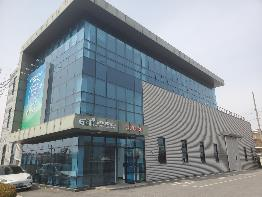
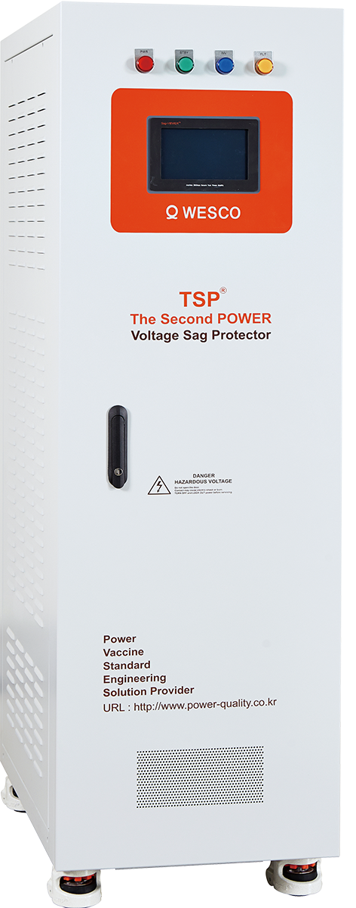
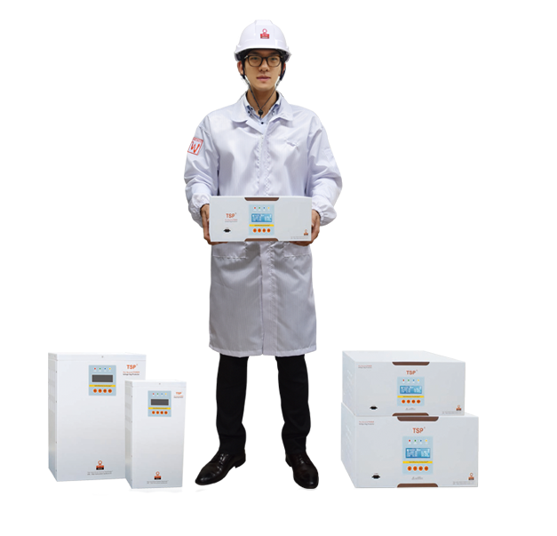
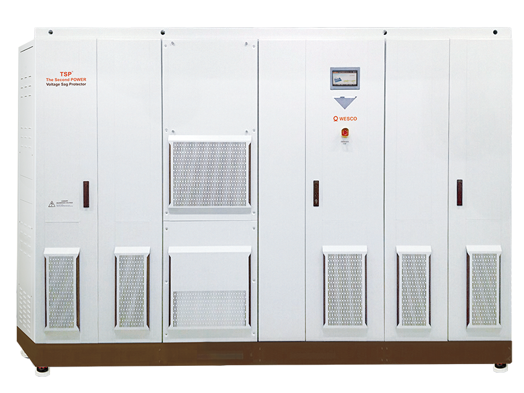
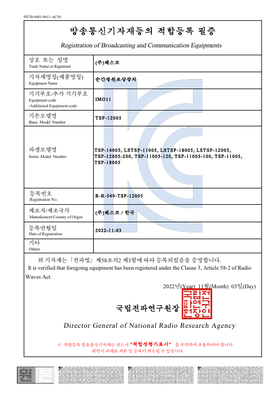
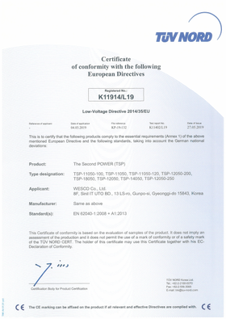
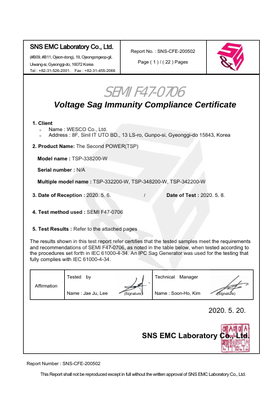
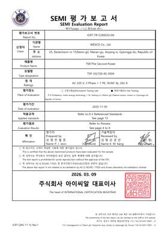

Q · 01
왜 1초 보상이 핵심인가?
고압 수전 제조 현장의 치명적 전력 품질 이슈는 대부분 1초 이내 순간전압강하입니다. 보고서와 Sag-VIEWER™ 기록으로 현장별 근거를 확인합니다.
0.1초의 전압강하로 라인 전체가 멈추고, 재가동까지 수 시간이 소요됩니다.
WESCO는 25년간 한 가지 문제만 해결해 — 국내 주요 대기업과 글로벌 제조사의
반도체·자동차·디스플레이 라인에서 이미 검증된 솔루션입니다.
25년간 한 가지에만 집중해 온 순간정전 보호 솔루션 전문 기업

단순한 전력 문제가 아니라 — 비즈니스 연속성의 문제
자연재해와 전력계통 고장이 주된 원인.
한 번의 순간정전이 두 가지 경로로 손실을 발생시킵니다.
설비/제품에 즉시 발생하는 손실
시간이 지날수록 누적되는 손실
전력 이상 발생 시에만 동작 — 2 ms 이내 완료

단상 0.5 kVA ~ 삼상 2,400 kVA · 국내 유일 풀 라인업






원격 감시 모니터링 — 국내 특허 보유 차별화 기술

전체 TSP 현황 한 화면에 — Total · Comm Err · Event · Fault
Grid / Load 입출력 전압·주파수·전력·역률 — SAG 발생 즉시 색상 변화
발생 시각 · Tool ID · DRT · Sag V · 보상 결과 (Recovered / Failed) 자동 저장
SEMI F47 · Power Vaccine 곡선 위에 SAG 이벤트 점 표시 → PDF Export
RS485 → Ethernet → 통합 Server. 고객 SCADA / DCS 연동
전체 누적 8,455대 + · 글로벌 Top-Tier 제조사가 검증한 신뢰성
제조 라인을 넘어, 국민 일상의 안전과 직결되는 핵심 인프라에서 검증된 신뢰성
에스컬레이터 · 무빙워크 — 24시간 무중단 운영의 핵심 보호
에스컬레이터 시스템 — 555m 초고층 빌딩의 전력 안정성 확보
놀이기구 — 안전 직결 설비의 순간정전 보호
놀이기구 · 안전 시스템 — 무정전 운영으로 방문객 안전 보호
TSP 3상 50 kVA — EMO Line + 제어 TR + Blowers 통합 보상
디스플레이 Fab 변전소 핵심 부하 일괄 보상
조립 라인 로봇 / UT COMP — 라인 정지 방지
3상 대용량 TSP — 전기실 배전반 측, IN-LINE 일괄 보상
국내 5사 · 해외 7사 + 글로벌 기술지원센터 — 현지 즉시 대응
전국 권역 커버리지 · A/S 통합 운영
중국 · 동남아 · 유럽 · 미국 거점
한국 본사 + 해외 거점 연동, 24/7
 대한민국
대한민국
 중국
중국
 베트남
베트남
 인도네시아
인도네시아
 말레이시아
말레이시아
 인도
인도
 일본
일본
 대만
대만
 미국
미국
 독일
독일
 폴란드
폴란드
 헝가리
헝가리
 체코
체코
 슬로바키아
슬로바키아
 터키
터키
 멕시코
멕시코
고객사 공장에서 발생한 SAG 데이터 — WESCO가 정기 제출하는 실제 보고서 양식
| 측정 기간 | 12 개월 (연속 모니터링) |
| 총 SAG 이벤트 | 21 건 |
| 1초 이내 비율 | 100 % |
| 최저 전압강하 | 90% Drop |
| 가장 빈번한 구간 | 50 ~ 100 ms |
| TSP® 보상 성공률 | 100 % |
본 측정 기간 동안 발생한 모든 SAG 이벤트(21건)는 1초 이내에 종료되었으며, WESCO TSP®는 이를 100% 보상하여 라인 정지를 방지했습니다. 이는 모든 Top-Tier 제조사가 요구하는 표준 스펙(100% Drop · 1초 보상)을 충족합니다.
권장: 동일 운영 환경에서 향후 12개월간 추가 모니터링 및 정기 리포트 제출을 통해 SAG 발생 추이를 관리하고 생산 수율을 안정화할 것을 권장합니다.
실측 보고서 그 다음 — 의사결정자가 가장 자주 받는 질문 3가지를 정리했습니다.
고압 수전 제조 현장의 치명적 전력 품질 이슈는 대부분 1초 이내 순간전압강하입니다. 보고서와 Sag-VIEWER™ 기록으로 현장별 근거를 확인합니다.
장시간 정전 백업은 UPS, SAG로 인한 라인 정지 방지는 TSP®가 담당합니다. 목적이 다르므로 현장 위험에 맞춰 조합 또는 대체를 판단합니다.
1회 정지 손실, 재가동 시간, 불량·폐기 비용, 연간 SAG 빈도를 기준으로 ROI를 산정합니다. 고가 라인일수록 회수 논리가 명확합니다.
현장 진단 · 견적 · 기술 상담 — 전문 엔지니어가 직접 응대합니다.